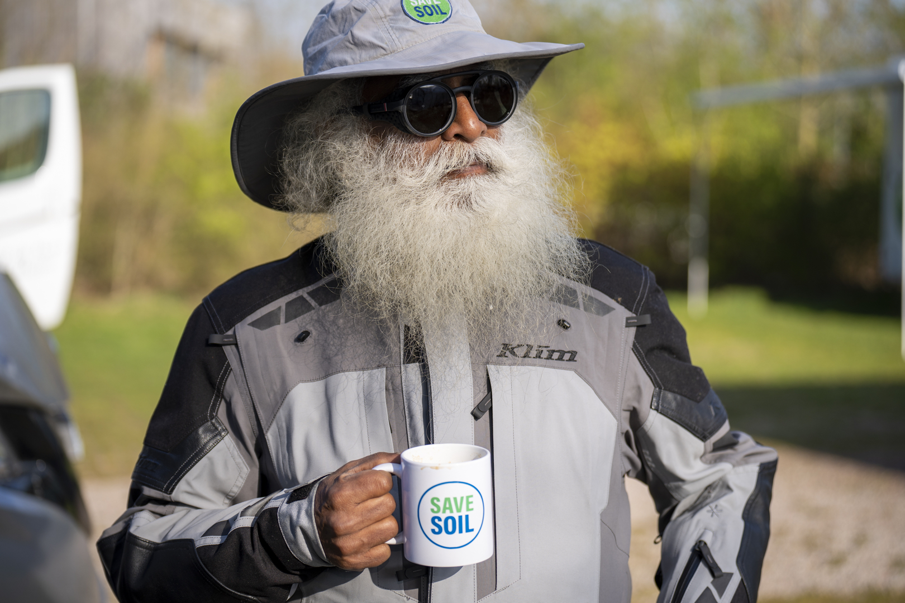

The Problem
Lack of organic content turns soil into sand, leading to:
-
FOOD CRISIS
-
WATER SCARCITY
-
LOSS OF BIO-DIVERSITY
-
CLIMATE CHANGE
-
LOSS OF LIVELIHOOD
-
CONFLICT AND MIGRATION

The Solution
Save soil movement
A Journey to Save Soil
The Save Soil Movement will work towards:
- Turning the world attention to our dying soil.
- Inspiring about 3.5 billion people (60% of the world’s electorate of 5.26 billion) to support policy redirections to safeguard, nurture and sustain soils.
- Driving national policy changes in 193 nations toward raising and maintaining the organic content of soils to a minimum of 3-6%.

Initiated by
Sadhguru
Sadhguru is a yogi and a mystic a man whose passion spills into everything he encounters. Named one of India's 50 most influential people, Sadhguru's work has touched the lives of millions worldwide through his transformational programs. For three decades now, Sadhguru has been continuously bringing the importance of soil and the alarming threat of Soil Extinction into the spotlight. He has said repeatedly at several international platforms: "Soil is our life, our very body. And if we forsake soil, in many ways, we forsake the planet."